Data Platforms and Artificial Intelligence
Challenges and Applications
Matteo Francia
DISI — University of Bologna
m.francia@unibo.it
Knowledge representation
A classification of metadata (Sharma and Thusoo 2016)
- Technical metadata
- Capture the form and structure of each dataset
- E.g.: type of data (text, JSON, Avro); structure of the data (the fields and their types)
- Operational metadata
- Capture lineage, quality, profile, and provenance of the data
- E.g.: source and target locations of data, size, number of records, and lineage
- Business metadata
- Captures what it all means to the user
- E.g.: business names, descriptions, tags, quality, and masking rules for privacy
Another classification of metadata (Sawadogo et al. 2019)
- Intra-object metadata
- Properties provide a general description of an object in the form of key-value pairs
- Summaries and previews provide an overview of the content or structure of an object
- Semantic metadata are annotations that help understand the meaning of data
- Inter-object metadata
- Objects groupings organize objects into collections, each object being able to belong simultaneously to several collections
- Similarity links reflect the strength of the similarity between two objects
- Parenthood relationships reflect the fact that an object can be the result of joining several others
- Global metadata
- Semantic resources , i.e., knowledge bases (ontologies, taxonomies, thesauri, dictionaries) used to generate other metadata and improve analyses
- Indexes , i.e., data structures that help find an object quickly
- Logs , used to track user interactions with the data lake
- Few details given on metamodel and functionalities.
- No metadata collected on operations.
- No discussion about the functionalities provided.
- No metadata collected on operations and agents.
- Crawls Google’s storage systems to extract basic metadata on datasets and their relationship with other datasets.
- Performs metadata inference, e.g., to determine the schema of a non-self-describing dataset, to trace the provenance of data through a sequence of processing services, or to annotate data with their semantics.
- Strictly coupled with the Google platform.
- Mainly focuses on object description and searches.
- No formal description of the metamodel.
- Version graphs represent data versions.
- Model graphs represent application metadata, i.e., how data are interpreted for use.
- Lineage graphs capture usage information.
- Not enough details given to clarify which metadata are actually handled.
- Functionalities are described at a high level.
 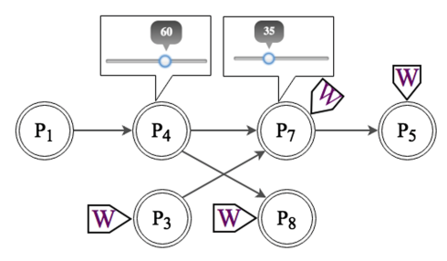
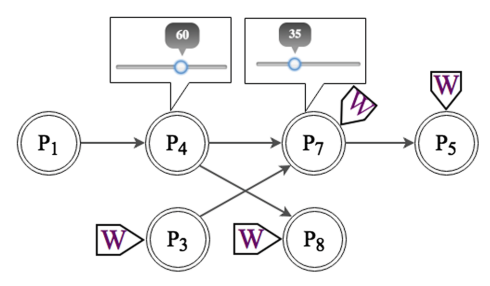
- Support users in creating and optimizing the data processing pipelines.
- Only goal-related metadata are collected.
MOSES

MOSES: (Francia et al. 2021)
Three areas:
- Technical (blue)
- Operational (green)
- Business (red)

MOSES: (Francia et al. 2021)
Tune the trade-off between the level of detail of the functionalities and the required computational effort
| Semantic enrichment |
Yes |
| Data indexing |
No |
| Link generation |
Yes |
| Data polymorphism |
Yes |
| Data versioning |
Yes |
| Usage tracking |
Yes |
The Property Graph Data Model
Born in the database community
- Meant to be queried and processed
- THERE IS NO STANDARD!
Two main constructs: nodes and edges
- Nodes represent entities,
- Edges relate pairs of nodes, and may represent different types of relationships
Nodes and edges might be labeled, * and may have a set of properties represented as attributes (key-value pairs)***
Further assumptions:
- Edges are directed,
- Multi-graphs are allowed
*** Note: in some _ _ definitions _ (_ the _ _ least ) edges _ are _ not _ _ allowed _ to _ have _ _ attributes
A W3C standard is being developed, but still does not exist.
Total function is just another name for a regular function. It just emphasizes the function is defined for all elements of its domain. Partial function may only apply to a subset of the elements in the domain
Example of Property Graph

Formal definition:
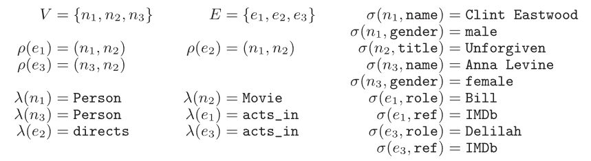
Traversal Navigation
We define the graph traversal pattern as: “the ability to rapidly traverse structures to an arbitrary depth (e.g., tree structures, cyclic structures) and with an arbitrary path description (e.g. friends that work together, roads below a certain congestion threshold)” [Marko Rodriguez]
Totally opposite to set theory (on which relational databases are based on)
- Sets of elements are operated by means of the relational algebra #
Let them think of it as follows: fix a set of starting points. Explore the graph from there according to the pattern provided EXAMPLE: Let’s go back to the movies example. Find the actors that acted together in two or more movies. PATTERN: (actor)-(movie)-(actor2) AND (actor)-(movie2)-(actor2)
Realize that there are three sources of complexity: Number of starting points 2)
Traversing Data in a RDBMS
In the relational theory, it is equivalent to joining data (schema level) and select data (based on a value)
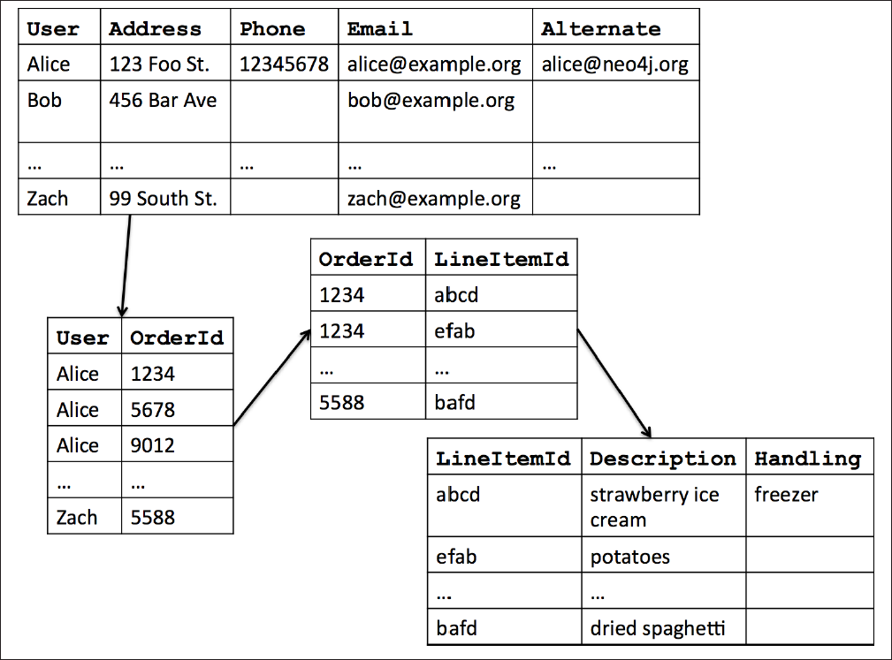SELECT *
FROM user u, user_order uo, orders o, items i
WHERE u.user = uo.user AND uo.orderId = o.orderId AND i.lineItemId = i.LineItemId
AND u.user = ‘Alice’
Traversing data = navigating data
Join: Schema level Traverse: Ocurrence level
Formula de DBD de row index join (el numero d’instancies total importa, encara que poques facin join). En relacional el cost depèn de la profunditat (num joins que he de fer) I també del nombre total de tuples de la taula destí.
Knowledge representation
A classification of functionalities enabled by metadata
- Semantic enrichment
- Generating a description of the context of data, e.g., with tags, to make them more interpretable and understandable
- Data indexing
- Data structures to retrieve datasets based on specific characteristics (keywords or patterns)
- Link generation and conservation
- Detecting similarity relationships or integrating preexisting links between datasets
- Data polymorphism
- Storing multiple representations of the same data to avoid repeating pre-processing and speed up analyses
- Data versioning
- Support data changes while conserving previous states
- Usage tracking
- Records the interactions between users and the data
Sawadogo, P. N., Scholly, E., Favre, C., Ferey, E., Loudcher, S., & Darmont, J. (2019, September). Metadata systems for data lakes: models and features. In European conference on advances in databases and information systems (pp. 440-451). Springer, Cham.
Data profiling
Data profiling
- A broad range of methods to efficiently analyze a given data set
- E.g., in a functional dependencies and association rules

Naumann, Felix. “Data profiling revisited.” ACM SIGMOD Record 42.4 (2014): 40-49.
Use cases
- Query optimization
- Performed by DBMS to support query optimization with statistics about tables and columns
- Profiling results can be used to estimate the selectivity of operators and the cost of a query plan
- Data cleansing (typical use case is profiling data)
- Prepare a cleansing process by revealing errors (e.g., in formatting), missing values or outliers
- Data integration and analytics
Challenges?
Naumann, Felix. “Data profiling revisited.” ACM SIGMOD Record 42.4 (2014): 40-49.
Challenges
- The results of data profiling are computationally complex to discover
- E.g., discovering keys/dependencies usually involves some sorting step for each considered column
- Verification of complex constraints on column combinations in a database
- What is the complexity of this task?
Naumann, Felix. “Data profiling revisited.” ACM SIGMOD Record 42.4 (2014): 40-49.
Knowledge exploitation
Object profiling and search
Discoverability is a key requirement for data platforms
- Simple searches to let users locate “known” information
- Data exploration to let users uncover “unknown” information
- Common goal: identification and description of Objects
Two levels of querying
- Metadata level (most important)
- Data level (can be coupled with the first one)
Knowledge exploitation
Basic search
- MATCH (o:Object)-[]-(:Project {name:“ABC”})RETURN o
- Return all objects of a given project
- MATCH (o:Object)-[]-(d:DataLakeArea)WHERE d.name = “Landing” AND o.name LIKE “2021_%”AND o.size < 100.000RETURN o
- Return small objects with a given name pattern in the landing area

100000 kb = 100 mb
Knowledge exploitation
Schema-driven search
- MATCH (o:Object)-[]-(:Schema)-[]-(a:Attribute), (a)-[]-(:Domain {name: “FiscalCode”})RETURN o
- Return objects that contain informationreferring to a given Domain

100000 kb = 100 mb
Knowledge exploitation
Provenance-driven search
- MATCH (obj1:Object)-[:readsFrom]-(o:Operation)-[:writesTo]-(obj2:Object)CREATE (obj1)-[:ancestorOf]->(obj2)
- MATCH (:Object {id:123})-[:ancestorOf*]-(obj:Object)RETURN obj
- Discover objects obtained from a given ancestor
- MATCH (obj:Object)-[:ancestorOf*]-(:Object {id:123})RETURN obj
- Discover object(s) from which another has originated
- Example: a ML team wants to use datasets that were publicized as canonical for certain domains, but they find these datasets being too “groomed” for ML
- Provenance links can be used to browse upstream and identify the less-groomed datasets that were used to derive the canonical datasets

100000 kb = 100 mb
Knowledge exploitation
Similarity-driven search
- MATCH (:Object {id:123})-[r:similarTo]-(o:Object)WHERE r.similarityType=“affinity”RETURN o
- Discover datasets to be merged in a certain query
- MATCH (:Object {id:123})-[r:similarTo]-(o:Object)WHERE r.similarityType=“joinability”RETURN o
- Discover datasets to be joined in a certain query
- Group similar objects and enrich the search results
- List the main objects from each group
- Restrict the search to the objects of a single group

100000 kb = 100 mb
Knowledge exploitation
Semantics-driven search
- MATCH (o:Object)-[:isDescribedBy]-(:OntologyTerm {uri:“http://…”})RETURN o
- MATCH (o:Object)-[*]-(any), (any)-[:isDescribedBy]-(:OntologyTerm {uri:“http://…”})RETURN o
- Search objects without having any knowledge of theirphysical or intensional properties, but simply exploitingtheir traceability to a certain semantic concept

100000 kb = 100 mb
Knowledge exploitation
Profiling
- MATCH (o:Object)-[]-(:OntologyType {name:“Table”}), (o)-[]-(s:Schema)-[]-(a:Attribute), (o)-[r:similarTo]-(o2:Object), (o)-[:ancestorOf]-(o3:Object), (o4:Object)-[:ancestorOf]-(o)RETURN o, s, a, r, o2, o3, o4
- Shows an object’s properties, list the relationships with other objects in terms of similarity and provenance
- Compute a representation of the intensional features that mostly characterize a group of objects(see slides on schema heterogeneity)

100000 kb = 100 mb
Knowledge exploitation
Provenance and versioning
Provenance: metadata pertaining to the history of a data item
- Any information that describes the production process of an end product
- Encompasses meta-data about entities, data, processes, activities, and persons involved in the production process
- Essentially, it describes a transformation pipeline, including the origin of objects and the operations they are subject to
J.Wang, D. Crawl, S. Purawat, M. H. Nguyen, I. Altintas, Big data provenance: Challenges, state of the art and opportunities , in: Proc. BigData , Santa Clara, CA, USA, 2015, pp. 2509–2516.
M. Herschel, R. Diestelk¨amper, H. Ben Lahmar, A survey on provenance: What for? What form? What from? , VLDB J. 26 (6) (2017) 881–906.
Data provenance
Provenance (also referred to as lineage, pedigree, parentage, genealogy)
- The description of the origins of data and the process by which it arrived at the database
- Not only data products (e.g., tables, files), but also the processes that created them
Use cases
- Business domain. Users traditionally work with an need to be identified and corrected to avoid costly errors in business forecasting.
- Scientific/research domain. copyright _ of data are significant when using third-party data in such a loosely connected network._
Simmhan, Yogesh L., Beth Plale, and Dennis Gannon. “A survey of data provenance techniques.” Computer Science Department, Indiana University, Bloomington IN 47405 (2005): 69.
Astronomers are creating an international Virtual Observatory
- A provision of the computational resources needed to exploit the data scientifically
- Astronomy changed from being an individualistic to a collective enterprise
- Telescope time is devoted/allocated to systematic sky surveys and analysis is performed using data from the archives
- Astronomers are increasingly relying on data that they did not take themselves
- Raw data bear many instrumental signatures that must be removed in the process of generating data products
Mann, Bob. “Some data derivation and provenance issues in astronomy.” Workshop on Data Derivation and Provenance, Chicago . 2002.https://www.esa.int/Science_Exploration/Space_Science/Webb/Webb_inspects_the_heart_of_the_Phantom_Galaxy (accessed 2022-08-01)

Simmhan, Yogesh L., Beth Plale, and Dennis Gannon. “A survey of data provenance techniques.” Computer Science Department, Indiana University, Bloomington IN 47405 (2005): 69.
Granularity
- Fine-grained (instance level): tracking data items (e.g., a tuple in a dataset) transformations
- Coarse-grained (schema-level): tracking dataset transformations
Queries
- Where provenance: given some output, which inputs did the output come from?
- How provenance: given some output, how were the inputs manipulated?
- Why provenance: given some output, why was data generated?
- E.g., in the form of a proof tree that locates source data items contributing to its creation
Simmhan, Yogesh L., Beth Plale, and Dennis Gannon. “A survey of data provenance techniques.” Computer Science Department, Indiana University, Bloomington IN 47405 (2005): 69.Ikeda, Robert, and Jennifer Widom. Data lineage: A survey . Stanford InfoLab, 2009.
Knowledge exploitation
Provenance and versioning
An important aspect is the granularity of provenance
- Fine-grained provenance is typically used for single vertical applications
- It requires to collect huge amounts of detailed information to enable a very detailed tracing
- Coarse-grained provenance is appropriate to ensure a broad coverage of highly heterogeneous transformations possibly involving several applications and datasets
Choosing a granularity is the result of a trade-off between accuracy and computational effort
- Storing only the name and the version of a clustering algorithm enables an approximate reproducibility of the results
- Storing all its parameters makes this functionality much more accurate
Data provenance
Data provenance, an example of data management
- Metadata pertaining to the history of a data item
- Pipeline including the origin of objects and operations they are subjected to
- We have a standard: https://www.w3.org/TR/prov-dm/

https://www.w3.org/TR/prov-dm/
Entity
- Physical/conceptual things
Activity
- Dynamic aspects of the world, such as actions
- How entities come into existence, often making use of previously existing entities
Agent
- A person, a piece of software
- Takes a role in an activity such that the agent can be assigned some degree of responsibility for the activity taking place

https://www.w3.org/TR/2013/NOTE-prov-primer-20130430/
Knowledge exploitation
Provenance and versioning
PROV: a standard for provenance modeling
- Several tools exists for managing PROV metadata
- Compliance with PROV ensures integration with existing tools for querying and visualization

L. Moreau, P. T. Groth, Provenance: An Introduction to PROV , Synthesis Lectures on the Semantic Web: Theory and Technology , Morgan & Claypool Publishers, 2013.
https://www.openphactsfoundation.org/wp/wp-content/uploads/2016/05/140609_Cologne_IPAW-2014_Paul-Groth_Provenance.pdf
Knowledge exploitation
Provenance functionalities (activated by metadata)
- Data quality
- Monitoring accuracy, precision, and recall of produced objects to notify the data scientist when a transformation pipeline is not behaving as expected
- Debugging
- Inferring the cause of pipeline failures is challenging and requires an investigation of the overall processing history, including input objects and the environmental settings
- Reproducibility
- Re-execution of all or part of the operations belonging to a pipeline
- Trustworthiness
- Help data scientists to trust the objects produced by tracing them back to their sources and storing the agents who operated on those objects
- Versioning
- Marking a generated object and its versions (e.g., due to changes in a database schema) helps in identifying relevant objects along with their semantic versions, and to operate with legacy objects
Knowledge exploitation
Graph DB and Centrality Measures
Measures of centrality
- Betweenness centrality (A)
- Number of shortest paths between two nodes that pass from a certain node
- Closeness centrality (B)
- Sum of distances to all other nodes.
- Eigenvector centrality (C)
- The score of a node is influenced by score of adjacent nodes (Page rank)
- Degree centrality (D)
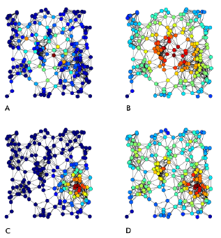Knowledge exploitation
Provenance and versioning
Some current research directions
- Expand PROV to better suite big data scenarios
- Y. Gao, X. Chen and X. Du, A Big Data Provenance Model for Data Security Supervision Based on PROV-DM Model , in IEEE Access , vol. 8, pp. 38742-38752, 2020.
- Define provenance-based approaches to measure the quality of big data
- Taleb, I., Serhani, M.A., Bouhaddioui, C. et al. Big data quality framework: a holistic approach to continuous quality management . J Big Data 8, 76 (2021).
- An outline of the challenges, including granularity identification, integration, security concerns
- A. Chacko and S. D. Madhu Kumar, Big data provenance research directions , TENCON 2017 - 2017 IEEE Region 10 Conference , 2017, pp. 651-656, doi: 10.1109/TENCON.2017.8227942.
- Blockchain-based provenance systems
- Dang, T. K., & Duong, T. A. (2021). An effective and elastic blockchain-based provenance preserving solution for the open data . International Journal of Web Information Systems .
- Ruan, P., Dinh, T. T. A., Lin, Q., Zhang, M., Chen, G., & Ooi, B. C. (2021). LineageChain : a fine-grained, secure and efficient data provenance system for blockchains . The VLDB Journal , 30 (1), 3-24.
Knowledge exploitation
Orchestration support
The orchestrator is the component in charge of controlling the execution of computation activities
- Either through a regular scheduling of the activities
- Or by triggering a process in response to a certain event
Several entities (either processes or human beings) can cover this role to activate some data processes
100000 kb = 100 mb
Knowledge exploitation
Orchestration functionalities (activated by metadata)
- Dynamic/condition-based behavior
- Decide what data process should be activated under different conditions
- Decide how to tune the parameters in case of parametric data processes
- Triggering
- Decide when to trigger a certain data process
- Scoping
- Assess the trustworthiness of objects to decide if a certain data process should be activated or not
- Resource estimation/prediction
- Decide the optimal amount of resources required to terminate successfully while leaving sufficient resources to the other concurrent process, based on previous executions and current settings
- Negotiate the resources with the cluster’s resource manager #
100000 kb = 100 mb
Knowledge exploitation
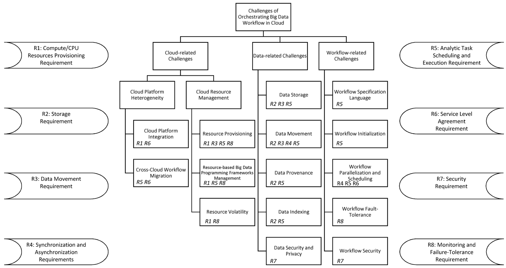Orchestration requirements & challenges
Barika, M., Garg, S., Zomaya, A. Y., Wang, L., Moorsel, A. V., & Ranjan, R. (2019). Orchestrating big data analysis workflows in the cloud: research challenges, survey, and future directions . ACM Computing Surveys (CSUR) , 52 (5), 1-41.
100000 kb = 100 mb
Knowledge exploitation
Orchestration requirements
- R1 Compute/CPU resource provisioning
- Determine the right amount of resources
- Continuously monitor and manage them in a dynamic execution environment
- R2 Storage
- Choose the right cloud storage resource, data location, and format (if the application is parametric)
- R3 Data movement
- Dynamically transfer large datasets between compute and storage resources
- R4 Synchronization and asynchronization
- Manage the control and data flow dependencies across analytics tasks
Barika, M., Garg, S., Zomaya, A. Y., Wang, L., Moorsel, A. V., & Ranjan, R. (2019). Orchestrating big data analysis workflows in the cloud: research challenges, survey, and future directions . ACM Computing Surveys (CSUR) , 52 (5), 1-41.
100000 kb = 100 mb
Knowledge exploitation
Orchestration requirements
- R5 Analytic task scheduling and execution
- Scheduling and coordinating the execution of workflow tasks across diverse sets of big data programming models
- Tracking and capturing provenance of data
- R6 Service Level Agreement
- Executions may need to meet user-defined QoS requirements (e.g., a strict execution deadline)
- R7 Security
- Beyond standard encryption approaches: private (anonymous) computation, verification of outcomes in multi-party settings, placement of components according to security policies
- R8 Monitoring and Failure-Tolerance
- Ensure that everything is streamlined and executed as anticipated
- As failures could happen at any time, handle those failures when they occur or predicting them before they happen
Barika, M., Garg, S., Zomaya, A. Y., Wang, L., Moorsel, A. V., & Ranjan, R. (2019). Orchestrating big data analysis workflows in the cloud: research challenges, survey, and future directions . ACM Computing Surveys (CSUR) , 52 (5), 1-41.
100000 kb = 100 mb
Knowledge exploitation
Orchestration challenges
- Cloud Platform Heterogeneity
- Integration (different APIs, virtualization formats, pricing policies, hardware/software configurations)
- Workflow Migration (e.g., to aspire to specific QoS features in the target cloud or better price)
- Cloud Resource Management
- Resource Provisioning (selecting the right configuration of virtual resources; the resource configuration search space grows exponentially, and the problem is often NP-complete)
- Resource-based Big Data Programming Frameworks Management (automatically select the configurations for both IaaS-level resource and PaaS-level framework to consistently accomplish the anticipated workflow-level SLA requirements, while maximizing the utilization of cloud datacenter resources)
- Resource Volatility (at different levels: VM-level, big data progressing framework-level and workflow task-level)
Barika, M., Garg, S., Zomaya, A. Y., Wang, L., Moorsel, A. V., & Ranjan, R. (2019). Orchestrating big data analysis workflows in the cloud: research challenges, survey, and future directions . ACM Computing Surveys (CSUR) , 52 (5), 1-41.
100000 kb = 100 mb
Knowledge exploitation
Orchestration challenges
- Data-related
- Storage (where the data will be residing, which data format will be used)
- Movement (minimize transfer rates, exploit data locality in task-centric or worker-centric way)
- Provenance (trade-off expressiveness with overhead)
- Indexing (which dataset is worth indexing and how)
- Security and Privacy (cryptography, access control, integrity, masking, etc.)
Barika, M., Garg, S., Zomaya, A. Y., Wang, L., Moorsel, A. V., & Ranjan, R. (2019). Orchestrating big data analysis workflows in the cloud: research challenges, survey, and future directions . ACM Computing Surveys (CSUR) , 52 (5), 1-41.
Knowledge exploitation
Orchestration challenges
- Workflow-related
- Specification Language (devising a high level, technology-/cloud-independent workflow language)
- Initialization (subdivision into fragments considering dependencies, constraints, etc.)
- Parallelization and Scheduling (with super-workflows defined at application and task level)
- Fault-Tolerance (thing can go wrong at workflow-, application-, and cloud-level)
- Security (securing workflow logic and computation)
Barika, M., Garg, S., Zomaya, A. Y., Wang, L., Moorsel, A. V., & Ranjan, R. (2019). Orchestrating big data analysis workflows in the cloud: research challenges, survey, and future directions . ACM Computing Surveys (CSUR) , 52 (5), 1-41.
Compression
Summarization / compression
- Present a concise representation of a dataset in a comprehensible and informative manner

Ahmed, Mohiuddin. “Data summarization: a survey.” Knowledge and Information Systems 58.2 (2019): 249-273.
Entity resolution
Entity resolution
- (also known as entity matching, linking)
- Find records that refer to the same entity across different data sources (e.g., data files, books, websites, and databases)

Papadakis, George, et al. “Blocking and filtering techniques for entity resolution: A survey.” ACM Computing Surveys (CSUR) 53.2 (2020): 1-42.
Data versioning
Version control
- A class of systems responsible for managing changes to computer programs, documents, or data collections
- Changes are identified by a number/letter code, termed the revision/version number
However, data pipelines are not only about code bult also about
- Model Version control
- Data Version Control
- Model Parameter Tracking
- Model Performance Comparison

Support CRUD (Create, Read, Update, Delete) operations with versions
E.g., on AWS (PUT, GET, DELETE), what about update?


https://docs.aws.amazon.com/AmazonS3/latest/userguide/versioning-workflows.html (accessed 2022-08-01)
CRISP-DM
The CR oss I ndustry S tandard P rocess for D ata M ining ( CRISP-DM ) is a process model that serves as the base for a data science process. It has six sequential phases:
- Business understanding – What does the business need?
- Data understanding – What data do we have / need? Is it clean?
- Data preparation – How do we organize the data for modeling?
- Modeling – What modeling techniques should we apply?
- Evaluation – Which model best meets the business objectives?
- Deployment – How do stakeholders access the results?

Pipelines for ML tasks


Tuning pipelines is hard
- At each step , a technique must be selected
- For each technique, a set of hyper-parameters must be set
- Each hyper-parameter has its own search space

AutoML
AutoML aims at automating the ML pipeline instantiation:
- it is difficult to consider all the constraints together;
- it is not transparent;
- it doesn’t allow a proper knowledge augmentation.

Thornton, et al. Auto-WEKA: Combined selection and hyperparameter optimization of classification algorithms. In Proceedings of the 19th ACM SIGKDD international conference on Knowledge discovery and data mining (pp. 847-855).Feurer, Matthias, et al. “Auto-sklearn 2.0: Hands-free automl via meta-learning.” The Journal of Machine Learning Research 23.1 (2022): 11936-11996.
HAMLET
HAMLET: Human-centric AutoML via Logic and Argumentation
HAMLET leverages:
- Logic to give a structure to the knowledge;
- Argumentation to deal with inconsistencies, and revise the results.

https://github.com/QueueInc/HAMLET Francia M., Giovanelli J., and Pisano P. “HAMLET: A framework for Human-centered AutoML via Structured Argumentation.” Future Generation Computer Systems 142 (2023): 182-194.
The LogicalKB enables:
- the Data Scientist to structure the ML constraints;
- the AutoML tool to encode the explored results

The Problem Graph allows to:
- consider all the ML constraints together;
- set up the AutoML search space;
- discuss and argument about the results.

The Data Scientist iterates on:
- editing the LogicalKB;
- consulting the Problem Graph;
- running the AutoML tool;
- discussing the AutoML insights.

KB and Problem Graph

pipeline
).
.
).
algorithms
).
).

pipeline
).
).
).
algorithms
).
).
# Forbid Normalization when using DT
c1: ⇒ forbidden(⟨N ⟩, Dt).

pipeline
).
).
).
algorithms
).
).
# Forbid Normalization when using DT
c1: ⇒ forbidden(⟨N ⟩, Dt).
# Mandatory Normalization in Classification Pipelines
c2: ⇒ mandatory(⟨N ⟩, Cl).

pipeline
).
).
).
algorithms
).
).
# Forbid Normalization when using DT
c1: ⇒ forbidden(⟨N ⟩, Dt).
# Mandatory Normalization in Classification Pipelines
c2: ⇒ mandatory(⟨N ⟩, Cl).

pipeline
).
).
).
algorithms
).
).
# Forbid Normalization when using DT
c1: ⇒ forbidden(⟨N ⟩, Dt).
# Mandatory Normalization in Classification Pipelines
c2: ⇒ mandatory(⟨N ⟩, Cl).
# Resolve conflict between c1 and c2sup (c1, c2).
Evaluation
Settings:
- Baseline: 1 optimization it. of 60 mins;
- PKB (Preliminary Knowledge Base): 1 optimization it. of 60 mins with non-empty LogicalKB;
- IKA (Iterative Knowledge Augmentation): 4 optimization it. of 15 mins with empty LogicalKB;
- PKB + IKA: 4 optimization it. of 15 mins with non-empty LogicalKB.

Settings:
- Baseline: 1 optimization it. of 60 mins;
- PKB (Preliminary Knowledge Base): 1 optimization it. of 60 mins with non-empty LogicalKB;
- IKA (Iterative Knowledge Augmentation): 4 optimization it. of 15 mins with empty LogicalKB;
- PKB + IKA: 4 optimization it. of 15 mins with non-empty LogicalKB.

Comparison with AutoML tools

HAMLET
Key features:
- knowledge injection;
- representation via an human- and
- machine-readable medium;
- insight discovery;
- dealing with possible arising inconsistencies.
Future directions:
- make constraints fuzzy;
- improve recommendation algorithm;
- enhance HAMLET with meta-learning;
- manage cross-cutting constraints (e.g., ethic, legal).

Advanced Analytics
Applications and Challenges
High availability and accessibility attract new data scientists
- High competence in business domain
- Low competence in computer science
Since the ’70s, relational queries to retrieve data
- Comprehension of formal languages and DBMS
- Advanced analytics (semi-automatic transformation)
- “Information” and “Knowledge” levels
Wisdom
(Decisions)
analytics
Knowledge
(Data Mining)
Hand-free scenarios
Information
(Data Warehouse, OLAP)
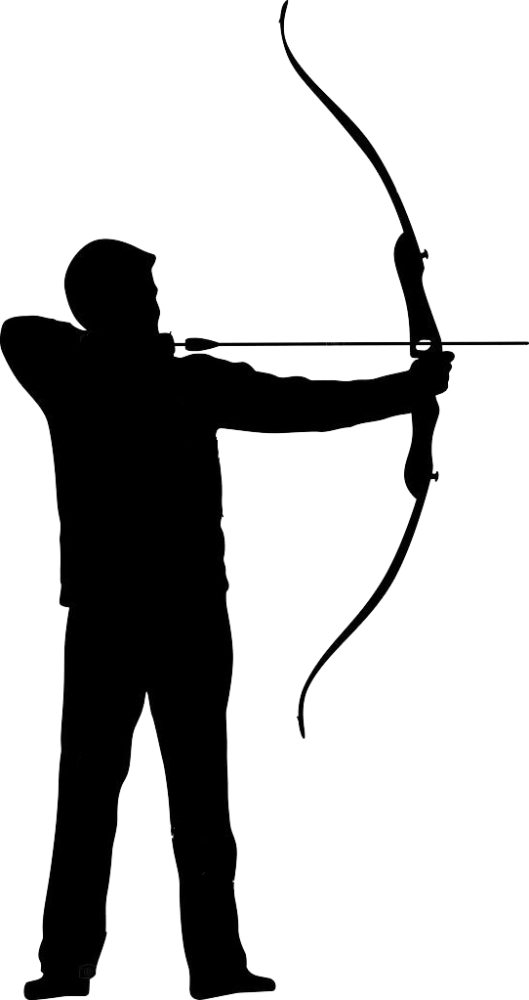
Data
(Operational DB, OLTP)
Many problems to address:
- Query recommendation based on contextual data
- E.g., augmented reality and digital twins
- Definition of interest
- Diversification
- Compression
- Natural Language and Vocalization
Application scope
Enable analytics through augmented reality [1]
- E.g., an inspector analyzing production rates
Sense the context through augmented devices
- E.g., smart glasses
- Detect interaction and engagement [1]
Produce analytical reports
- Relevant to the sensed context
- Cardinality constraint
- Near real-time
Analytical Reports

[1] Francia, Matteo, Matteo Golfarelli, and Stefano Rizzi. “A-BI+: a framework for Augmented Business Intelligence.” Information Systems 92 (2020): 101520.[2] Yu-Chuan Su, Kristen Grauman: Detecting Engagement in Egocentric Video. ECCV (5) 2016: 454-471
Sistemi come recommender system di Amazon possono usare dati contestuali (e.g, la posizione), tuttavia Ci sono differenze sia differenze di «metodo» / «framework» che di «recommendation» «Metodo» - Amazon si basa su verità «più storiche», noi interpretiamo e «mixiamo» un contesto real-time costituito da più oggetti interessanti rilevati (e/o ingaggiati) dal sistema - Il nostro sistema è «end-to-end», cioè riguarda anche la gestione e linking dei dati per la costruzione delle query
«Recommendation», formalmente noi usiamo un approccio ibrido (mentre i classici sono item-based o collaborative) - Mix di conoscenza real-time con storica: Non siamo strettamente log-based (i.e., il contesto ci serve per un cold-start problem). Mentre il consiglio di amazon è «altri utenti hanno acquistato/visualizzato anche…»- Cardinalità del risultato per fare fit di un device augmented- Diversification di query diverse, non di una singola query
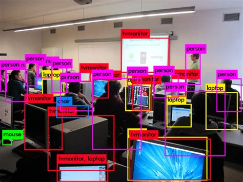
Is AOLAP out of reach?Object recognition (YOLO [5])Egocentric computer vision [6]
[5] Redmon, J., & Farhadi, A. (2017). YOLO9000: better, faster, stronger. In Proceedings of the IEEE conference on computer vision and pattern recognition (pp. 7263-7271).
[6] Fathi, A., Farhadi, A., & Rehg, J. M. (2011, November). Understanding egocentric activities. In 2011 International Conference on Computer Vision (pp. 407-414). IEEE.
Augmented OLAP
Augmented OLAP, a 3D marriage
- Augmented reality
- Real-time information [2]
- Business intelligence
- Recommendation
Augmented Reality
(real-time)
Inputs
Output
Query Log
(experience)
Data Mart
& Mappings
(a-priori)


[2] Angelo Croatti, Alessandro Ricci: Towards the Web of Augmented Things. ICSA Workshops 2017: 80-87
What can we sense?

Data Mart: repository of multidimensional cubes
- Cubes representing business facts
Data dictionary
- What we can recognize (i.e., md-elements)
- Context: subset of md-elements
Mappings to sets of md-elements
<Object, Seat> dist = 1m
<Object, BikeExcite> dist = 2m
<Location, RoomA.1>
<Date, 16/10/2018>
<Role, Controller>
Quantity
Revenues
AssembledItems
AssemblyTime
Recommendation

Context interpretation
- Given context T over the data dictionary
- Project _ T_ to an image of fragments I through mappings
- Fragment: intuitively a “small” query
Add the log
- Get queries with positive feedback from similar contexts
- Enrich I to I* with unperceived elements from T
- Each fragment has contextual and log relevance
Query generation
- Cannot directly translate I* into a well-formed query
- High cardinality I* = hardly interpretable “monster query”
Analytical Reports
recommended queries
relevant queries
<Object, Seat> dist = 1m
<Object, BikeExcite> dist = 2m
<Location, RoomA.1>
<Date, 16/10/2018>
<Role, Controller>
Query generation
Query generation
Generate queries from image I* of fragments
- Each fragment is a query
- Depth-first exploration with pruning rules
- Query cardinality can only increase
- Some queries are redundant
{Month,Part,Product},
{(Product=BikeExcite)},
{Quantity,AssembledItems}
{Month,Part,Product},
{(Product=BikeExcite)},
{Quantity,AssembledItems}
},
)},
{Year,Part,Product},
{(Product=BikeExcite)},
{Quantity,AssembledItems}
{Product},
{(Product=BikeExcite)},
{Quantity}
{Month,Product},
{(Product=BikeExcite)},
{Quantity,AssembledItems}
{Month,Product},
{(Product=BikeExcite)},
{Quantity,AssembledItems}
{Year,Product},
{(Product=BikeExcite)},
{Quantity,AssembledItems}
{Part,Type},
{(Type=Bike)},
{}
{Month,Part,Type},
{(Type=Bike)},
{AssembledItems}
{Month,Part,Type},
{(Type=Bike)},
{AssembledItems}
{Month},
{},
{AssembledItems}
{Year,Part,Type},
{(Type=Bike)},
{AssembledItems}
},
{},
{Year},
{},
{AssembledItems}
Query selection
Given #queries ( rq ), maximize the covered fragments and minimize their overlapping
* E.g., given two queries **_q'_**
* **_(q') _** _– _ _sim(q, q') \* (_ _rel_ _(q) \+ _ _rel_ _(q')) / 2_
- Weighted Maximum Coverage Problem (NP-hard)
- Greedy: iteratively pick query maximizing rel T
- Only a few query are retrieved, not expensive

Effectiveness
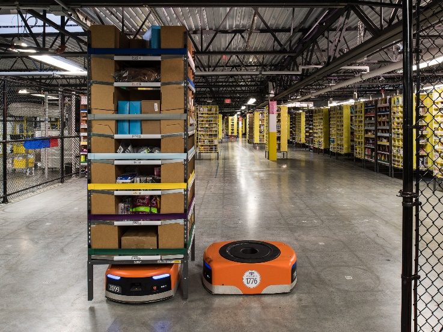

|T| = 12, rq _ = 4_
- Best query (with user exp.)
- After 2 visits: 0.95, 4 visits: 0.98
- Best query (no user exp.)

Efficiency

Research directions
Analytics in augmented reality
- Support analytical queries in hand-free scenarios
- Recommend relevant data facts from a real-world context
Research directions
- Provide (fast) query previews
- Estimate the execution time of each query
- Address query caching and multi-query optimization issues
- Correlate context-awareness to data quality [3]
- Relevance, amount, and completeness [4]
[3] Stephanie Watts, Ganesan Shankaranarayanan, Adir Even: Data quality assessment in context: A cognitive perspective. Decis. Support Syst. 48(1): 202-211 (2009)
[4] Diane M. Strong, Yang W. Lee, Richard Y. Wang: Data Quality in Context. Commun. ACM 40(5): 103-110 (1997)
Motivation
Enable analytics through natural language
OLAP provides low-level operators [1]
- Users need to have knowledge on the multidimensional model…
- … or even programming skills
We introduce COOL (COnversational OLap) [3]
- Translate natural language into formal queries

[1] Panos Vassiliadis, Patrick Marcel, Stefano Rizzi: Beyond roll-up’s and drill-down’s: An intentional analytics model to reinvent OLAP. Inf ormation __ Systems__ . (2019)
[2] Matteo Francia, Matteo Golfarelli, Stefano Rizzi: A-BI+: A framework for Augmented Business Intelligence. Inf ormation __ Systems__ . (2020)
[3] Matteo Francia, Enrico Gallinucci, Matteo Golfarelli: COOL: A Framework for Conversational OLAP. Inf ormation __ Systems__ . (2021)
DIFF: [17] returns tuples that maximize difference between cells of a cube given as input Profile user exploration to recommend which unvisited parts of the cube RELAXoperator allows toverify whether a pattern observed at a certain level of detail ispresent at a coarser level of detail too [19] Alternative operators have also been proposed in theCinecubes method [7,8]. The goal of this effort is to facilitateautomated reporting, given an original OLAP query as input.To achieve this purpose two operators (expressed asacts) areproposed, namely, (a)put-in-context, i.e., compare the result ofthe original query to query results over similar, sibling values;and (b)give-details, where drill-downs of the original query’sgroupers are performed.
COOL: architecture

Metadata
& values
Automatic
KB feeding
Manual KB enrichment
DIFF: [17] returns tuples that maximize difference between cells of a cube given as input Profile user exploration to recommend which unvisited parts of the cube RELAXoperator allows toverify whether a pattern observed at a certain level of detail ispresent at a coarser level of detail too [19] Alternative operators have also been proposed in theCinecubes method [7,8]. The goal of this effort is to facilitateautomated reporting, given an original OLAP query as input.To achieve this purpose two operators (expressed asacts) areproposed, namely, (a)put-in-context, i.e., compare the result ofthe original query to query results over similar, sibling values;and (b)give-details, where drill-downs of the original query’sgroupers are performed.
Sales by Customer and Month


Annotated parse forest
Disambiguation
& Enhancement
Execution & Visualization


Metadata
& values
Automatic
KB feeding
Manual KB enrichment
COOL: interpretation
⟨GPSJ⟩::= ⟨MC⟩⟨GC⟩⟨SC⟩
⟨MC⟩ ::= (⟨Agg⟩⟨Mea⟩ | ⟨Cnt⟩⟨Fct⟩)+
⟨GC⟩ ::= “𝑔𝑟𝑜𝑢𝑝 𝑏𝑦” ⟨Attr⟩+⟨SC⟩ ::= “𝑤ℎ𝑒𝑟𝑒” ⟨SCA⟩⟨SCA⟩ ::= ⟨SCN⟩ “𝑎𝑛𝑑” ⟨SCA⟩ | ⟨SCN⟩⟨SCN⟩ ::= “𝑛𝑜𝑡” ⟨SSC⟩ | ⟨SSC⟩⟨SSC⟩ ::= ⟨Attr⟩⟨Cop⟩⟨Val⟩ | ⟨Attr⟩⟨Val⟩ | ⟨Val⟩⟨Cop⟩ ::= “=” | “<>” | “>” | “<” | “≥” | “≤”⟨Agg⟩ ::= “𝑠𝑢𝑚” | “𝑎𝑣𝑔” | “𝑚𝑖𝑛” | “𝑚𝑎𝑥”⟨Cnt⟩ ::= “𝑐𝑜𝑢𝑛𝑡” | “𝑐𝑜𝑢𝑛𝑡 𝑑𝑖𝑠𝑡𝑖𝑛𝑐𝑡”⟨Fct⟩ ::= Domain-specific facts⟨Mea⟩ ::= Domain-specific measures⟨Attr⟩::= Domain-specific attributes⟨Val⟩ ::= Domain-specific values
T _ = _ «return the average sales in 2019 per store region»
Why grammars?
- In the OLAP domain, GPSJ queries do not have very complex structures
- Our grammar can support the translation without apriori training or external ontologies
- Grammar produces “explainable” trees
- Data cubes can contain data from highly-specific domains for which
- We could not have a big corpus of data to train (deep) machine learning models
- We could not have (open) ontologies to support translation
- We also tried Dependency Trees from Stanford NLP
- However, the structure of the tree is highly variable
- (Empirically) Using n-grams enables good flexibility and robustness for COOL
Tokenization
- Our `tokenization and mapping` does not leverage stemming or lemmatization
- We assume that even if users are not expert on the OLAP paradigm, they know the business domain
Jagadish: The linguistic parse trees in our system are dependency parse trees, in which each node is a word/phrase specified by the user while each edge is a linguistic dependency relationship be- tween two words/phrases. The
https://corenlp.run/ _ _
return the average of the sales
return the average sales
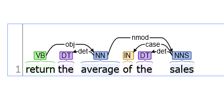
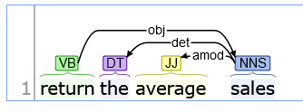
Jagadish: The linguistic parse trees in our system are dependency parse trees, in which each node is a word/phrase specified by the user while each edge is a linguistic dependency relationship be- tween two words/phrases. The
Given T _ = _ «return, the, average, sales, in, 2019, per, store, region»
Example of mappings
T = «return, the, average, sales, in, 2019, per, store, region»
M 1 _ = «select, avg, _ UnitSales , where, 2019, group by, region»
T = «return, the, average, sales, in, 2019, per, store, region»
M 2 _ = «select, avg, _ UnitSales , where, 2019, group by, StoreSales , region»
Jagadish: The linguistic parse trees in our system are dependency parse trees, in which each node is a word/phrase specified by the user while each edge is a linguistic dependency relationship be- tween two words/phrases. The
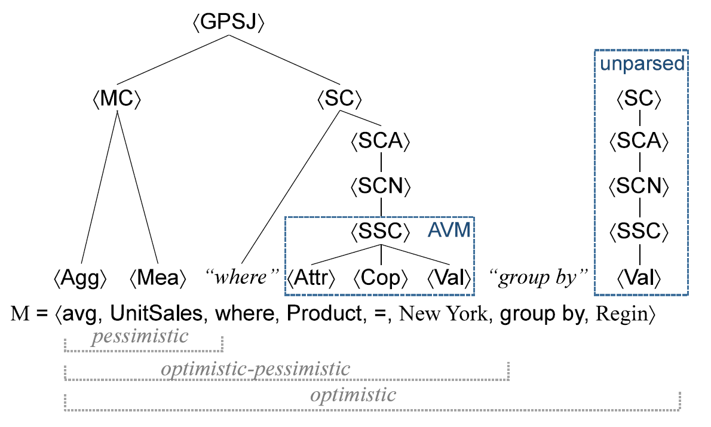
Effectiveness
40 users with heterogeneous OLAP skills
- Asked to translate (Italian) analytic goals into English
- Users provided good feedback on the interface…
- … as well as on the interpretation accuracy
| OLAP Familiarity |
Accuracy |
Time (s) |
Accuracy |
Time (s) |
| Low |
0.91 |
141 |
0.86 |
102 |
| High |
0.91 |
97 |
0.92 |
71 |
Efficiency

COOL in Action!
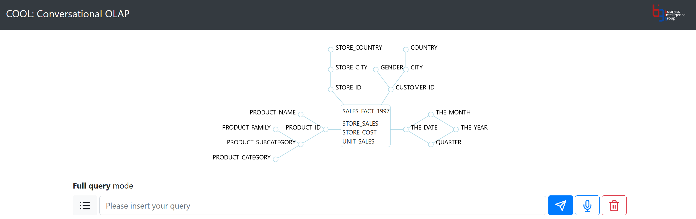
[3] Matteo Francia, Enrico Gallinucci, Matteo Golfarelli: Conversational OLAP in Action. EDBT (best demo award) 2021: 646-649

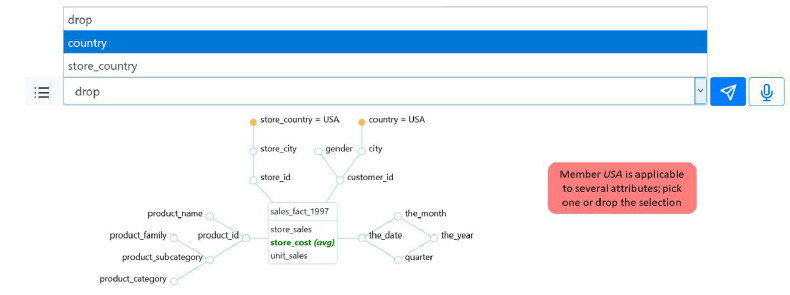
Research directions
COOL (Conversational OLAP)
- Support the translation of a natural language conversation into an OLAP session
- Analyze data without requiring technological skills
- Add conversational capabilities to Augmented OLAP
Towards an end-to-end conversational solution
- Create query summaries that can be returned as short vocal messages
- Identify insights out of a large amount of data
- Identify the “right” storytelling and user-system interaction


 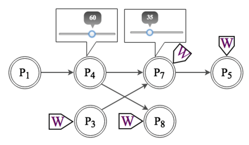
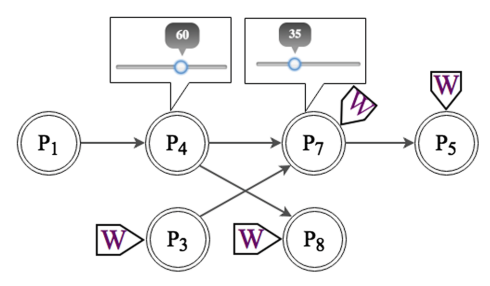